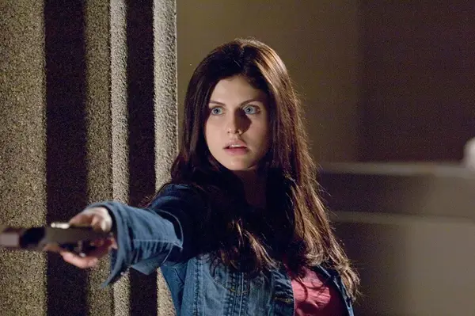
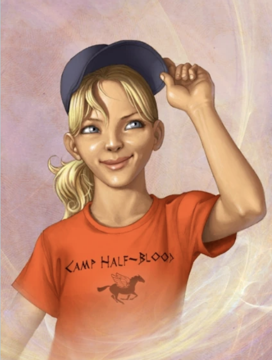

The 2010 Percy Jackson films (not the recent ones made by disney) has recieved many complaints for the inaccuracies not only in physical features, but also in age. The entire main cast of the percy jackson films were shown to be in their late 20s, when cannonically they're only around 13-14.

As well as this, the actress for Annabeth also recieved backlash due to the unrecgonizable features from both. Annabeth chase is described as having blonde hair and, of course, being a young teenager. Many critiques say that, "Annabeth got movie Hermione’d so hard that I’m sure the reason they made her a brunette was to play up that comparison" as a show for the major inaccuracies.